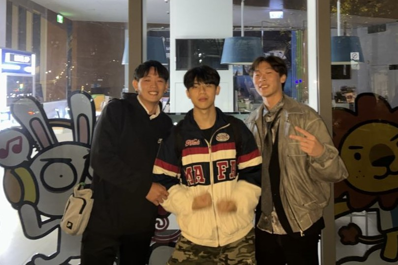

高中生活(2018.9-2021.6)
右圖，是我在去年班聯會的成員們第一次辦理活動所拍攝的照片
我就讀位於台北的建國高中，高中三年除了學業外，我參與了班聯會，為學校及學生辦理各式各樣的事務。
當時我擔任的職位是公關長，負責擔任學校、學生及校外之間的聯絡橋梁，在溝通上扮演重要角色，因此團隊領導及合作能力也尤為重要。

右圖的我，是我在去年參加台大聯合耶誕晚會和朋友拍的照片
我是一位在台北長大的台南人，高中時就讀建國中學，而在高中過程有參與學校的班聯會
目前的我，就讀於陽明交通大學的資訊工程學系，
右圖，是我在去年班聯會的成員們第一次辦理活動所拍攝的照片
我就讀位於台北的建國高中，高中三年除了學業外，我參與了班聯會，為學校及學生辦理各式各樣的事務。
當時我擔任的職位是公關長，負責擔任學校、學生及校外之間的聯絡橋梁，在溝通上扮演重要角色，因此團隊領導及合作能力也尤為重要。

系籃慶功宴
高中畢業後，我就讀於台灣大學機械工程學系，在大學生活中，除了參加大大小小的系上活動，社團的參與也是不可或缺的。
當時我參與了滑板社以及系籃，在攻讀學業的同時也兼顧生活健康。

右圖的我，是我在去年參加台大聯合耶誕晚會和朋友拍的照片
然而人的一生總是充滿著意外，在幾經深思熟慮後還是重新參加學測，考取交通大學資訊工程學系，並提編一個年級。
而目前參與的社團是熱舞社跳breaking，一種最熱血、最講究battle 的舞風。同時，今年(2024)我國選手也將參與此奧運比賽項目。
.